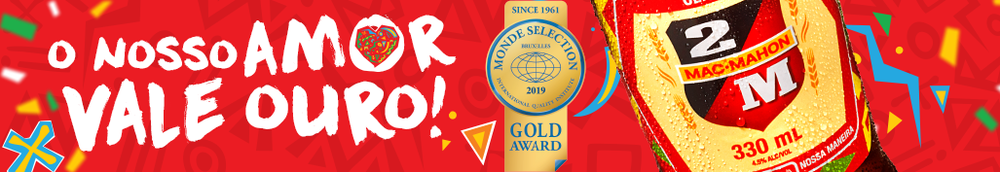
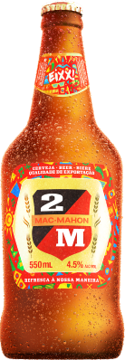

2M
A 2M começou a ser produzida em 1965, em Maputo, e faz parte da categoria
de marcas mainstream, sendo actualmente a cerveja número #1 da CDM.
Bem reconhecida em todo país, é uma cerveja fácil de beber, leve e refrescante,
que liberta o espírito vibrante Moçambicano em todas as pessoas e em todos os momentos.
Factos e curiosidades
- 2M” é uma homenagem ao ex-presidente francês Marie Edmé Patrice Maurice,
Conde de Mac Mahon.
- A cerveja é vendida também na África do Sul, Portugal e em Inglaterra
(em parceria com a cadeia de restaurantes Nandos).
- É a marca que patrocina os grandes eventos musicais e que promove anualmente
a Copa 2M, o torneio de futebol de praia sobejamente conhecido.
Prémios
- Vencedora nos African Beer Awards 2015, na categoria de cervejas
claras com ABV abaixo dos 5%.
- Eleita a Melhor Cerveja de África, com o título de Grand Champion
Beer, nos African Beer Awards.
Ingredientes
Factos e Curiosidades
Patrocinadora do Moçambola, o Campeonato Moçambicano de Futebol
que é a competição mais importante de futebol realizada em Moçambique.
|